Healthy Eating Application Report
RMIT User-Centred Design
Assignment 1
K_Ringwood
Tia Comyns, Eamon Dunne, Toby Mach, Timothy Tran
Introduction
One of the most influential driving forces for the wellbeing of the restaurant industry, as
well as the eating habits of the general public in the recent decade has been the advent of food-focused
smartphone applications. Any time the name of a restaurant, or even cuisine, is entered into a search
engine, the reviews provided and collected by companies such as Zomato and Google often follow or even rank
higher than the website of the restaurant itself in the displayed results. As such, it is clear that search
engines and third party applications play a huge factor in the success of a restaurant - in fact, customers
are 87% likely to perform a Google search to discover restaurants near them as opposed to using other
sources (Clampet, 2019). At the same time, due to this increased exposure, the offerings of individual
restaurants are on greater display than ever, allowing the consumer to make more informed choices based on
the metrics which they value. According to a State of the Industry report by the National Restaurant
Association (2017), '70 percent of consumers said availability of healthy menu
items influences where they dine out'. Furthermore, 74% of individuals self reported as aged 18 to 36
chose specific restaurants over similar restaurants due to the availability of healthy options (ibid, 2017).
As such, there is no doubt that the trend of making healthier food choices will continue growing in
popularity and as such, present opportunities for new entries into the field of applications to assist users
in finding these options.
There are many factors that could influence a person’s diet, a major one
being the choice or ability to eat out instead of preparing food at home. This is often seen as an indulgent
choice; however, people may not always have the choice to prepare food as the pace of modern life leaves a
lot of people under immense time pressure. Food when eating out is usually more expensive; in addition, the
diner cannot control what goes into their food, so they lack as much agency to choose healthier ingredients
or add less oil, etc. To add to this, less healthy options such as fast food are often less expensive and
are marketed as such, meaning a person’s socioeconomic status also plays a role in what food they are
likely to choose when eating out. Indeed, in first world countries, low socioeconomic status has been found
to be correlated with higher chances of obesity (McLaren, 2007). As such, there are always members of the
public seeking to make a positive change to their diet, and it is for this reason that we have chosen a
healthy eating app to be the topic of our report.
This project revolves around designing an app specifically for people who attend RMIT
University to make them aware of and assist them in finding healthier food options around their campus. A
major challenge we foresee is the brand loyalty of users to already established food apps as well as search
engines - the loyalty of their users and intersection between users of rival apps is not clear. Therefore, a
major problem identified is that the suitability and catering of the apps compared to established food apps
and search engines in general that do not really cater to any one specific user-base anymore, and take a
much more generalist approach in their audience. Another issue is the development timeline - we are banking
on the fact that the trend in health-conscious eating will continue as the app goes through its development
cycle, as the data from our research relates to current and past trends. Finally, a major issue that will be
investigated heavily in the survey is the inclusions and usage of features of the app that already have
established alternatives, such as maps which already has an established competitor in the form of Google
Maps. Will users still be open to using our app despite the existence of an established competitor?
Proposed solution
According to Schumer, Amadi & Joshi (2018), the rating of a health food
related app is higher when labeled as a 'diet' app. Our app would share features of these same apps
as well as those found in traditional dining apps such as Zomato. This would allow eating out to work within
the confines as to what a diet is traditionally viewed, with recognisable features from diet apps seamlessly
integrated with those of a dining out application (e.g a calorie counter that counts the calories based on
menu selection.)
Part 1: Competitive analysis
Who are the intended users?
|
User Group
|
Description / attributes
|
|
RMIT Students
|
- Young (18-30 years old)
- Health conscious
- Technologically savvy
- Proficient at smartphone operation
- Access to mobile data (WiFi on campus) and GPS
connection
- Middle class, if they can afford to eat out
- On a budget at the same time
- Some upper class students, particularly
international students
- May live in suburbia or locally in student
accommodation
- Time-conscious if they cannot bring/make their own
food
- Functional English
|
|
RMIT Staff
|
- Age varies - tutors could be students’ age
(18-30 years old) and lecturers may be older (30-50)
- Health conscious
- Technologically savvy
- Proficient at smartphone operation
- Access to mobile data (WiFi on campus) and GPS
connection
- Time-conscious if they cannot bring/make their own
food
- May live in suburbia or locally
- Functional English
|
|
Locals
|
- Wealthy or good at money management (can afford CBD
apartment or student accommodation)
- Lives or works in proximity to RMIT University and is
aware of the university’s existence
- Technologically savvy
- Proficient at smartphone operation
- Access to mobile data (WiFi at home) and GPS
connection
- Health conscious
- Functional English
|
We decided that our target audience should logically consist of the demographics
who are likely to find themselves frequently within the geographical area of RMIT University, given that
according to the specification, the app is to be targeted specifically at food options around its City
campus. We found three main groups of people who would meet this criteria - students at RMIT, staff at RMIT
and locals who live around campus but may not necessarily be attending the university. These groups would be
interested in eating out for a multitude of reasons - not having enough time to prepare meals at home,
wanting a quick snack during break times, or just to indulge in a more substantial meal out. Our app would
facilitate the ability of these demographics to find healthier eating options around campus, as well as
incorporate some features more related to healthy eating in general, such as a calorie counter and meal
planner.
Who are the main competitors on the market?
|
App name
|
Description
|
Target audience
|
Features
|
|
The Happiest Hour
|
The Happiest Hour is an app that updates and notifies for nearby
specials for food and drink in Australia and NZ.
|
The app targets people who are a bit more money conscious when they
eat out. Students fall into this category, as well as those who don’t eat out often.
Inclusion of 2 for 1 deals exclusive to the app also shows a targeted approach aimed towards
people planning dates.
|
- Deals are shown in a graphic bar list
- In-app map + directions
- Exclusive app-only deals
- Specials are organised by day and update based on
day
- Tertiary events offered
- Completely free
- Feedback tab
- A 'wallet' page for deals that are yet to be
used
- A favourites page for storing desired deals
|
|
Zomato
|
A food discovery app that allows people to search and discover
restaurants. Provides access to the restaurant’s menus, photos, reviews and a map to guide
you there.
|
A widely used app. Rapid growth has led it to appear directly after
Google’s own review service in Google searches for restaurants. Due to its popularity,
people who are looking for a restaurant through a search engine will inevitably find Zomato.
This in turn means that it is one of the easier options for users to access, driving more users
to the app.
|
Free:
- Search bar that can search via location, cuisine
type, restaurant name
- View menus, food pictures and reviews of
restaurants
- Maps with directions to restaurants
- Curated articles based on food
- Social aspects such as a collection and
follower/following feature
- In-app booking
- Food-based videos
- Seperate tabs for nightlife
- Cross platform with pc and browser
Premium (Zomato Gold):
- Exclusive 1 for 1 deals for meals and 2 for 2 on
drinks for partnered restaurants
|
|
Yelp: local food and services
|
A business directory and crowd-sourced review forum. The app
available on mobile devices is focused towards food restaurants and local businesses.
|
This app is unique in that it targets business owners as one of their
key target user bases. Another significant user base would be 'foodies', especially
those who photograph their food and review restaurants.
Students, young adults and self
described 'foodies' that have the disposable income to eat out often would be the target
audience.
|
Free:
- search bar that can search via location, cuisine
type, restaurant name
- view menus,food pictures, directions and review of
restaurants
- App exclusive deals
- social network features including: adding photos,
checking in to a restaurant, 'liking', bookmarking and finding friend
- Making 'collections' of favoured
businesses.
- Information on business other than food
-in-app
delivery, ordering and booking, as well as analog services with businesses
- Business owner specific features, such as review
responding and self advertisement.
- Cross platform with pc
Yelp Elite Squad:
- Rewards power users by granting them greater
influence on Yelp with exclusive events and a verification badge.
|
What are the main tasks the users are expected to accomplish in these
competitors?
Zomato is a food discovery app that facilitates the user’s ability to find
and make informed decisions as to locations at which to dine out. The app uses the location of the device,
as well as the reviews of restaurants they have previously visited, to suggest new restaurants for the user
to try. It is also possible to easily search these results either by keyword or by cuisine.
The main tasks users are expected to accomplish using Zomato are:
- Finding and displaying highly rated restaurants located near the
user
- Being able to search for specific cuisines as well as
keywords
- Seeing updated user reviews and menus to be able to make an
informed decision
- Being able to make reservations on the app
- Getting an approximate idea of the cost per head, as well as
being able to view the menu, before committing to the restaurant
|
The layout of the app is very easy to work with. Upon startup, a
variety of local 4+ star restaurants is immediately displayed to the user in the form of a
scrollable list with large images of the food offered at each venue. As the suggestions are
drawn from the user’s usage data, the suggestions will become more tailored to the user
the more they use the app.
|
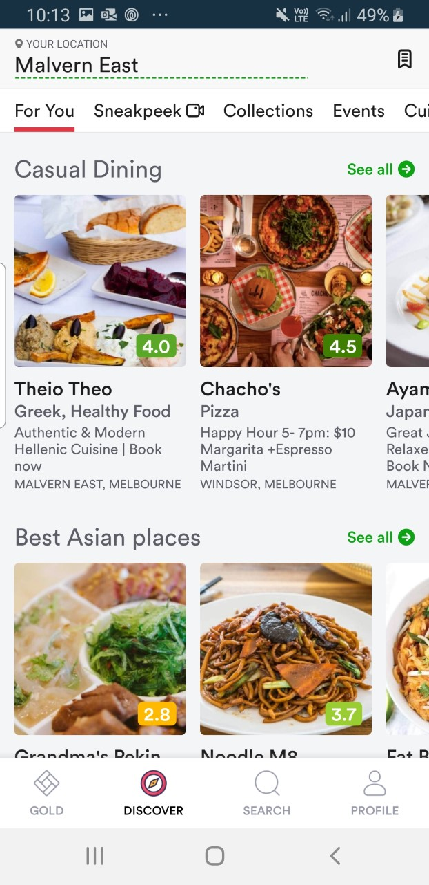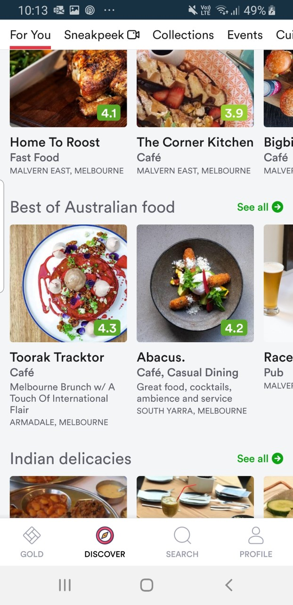
|
|
It is extremely simple to use make a reservation from inside the app, as
your details are collected at the moment you log in with an account, whether it be a Zomato
account, Google or Facebook. This circumvents the need to make a phone call to the restaurant,
saving a lot of hassle for both the user and the restaurant. This is an extremely streamlined
and user friendly experience, taking only 5 taps to book a table from the main
‘discover’ screen.
|
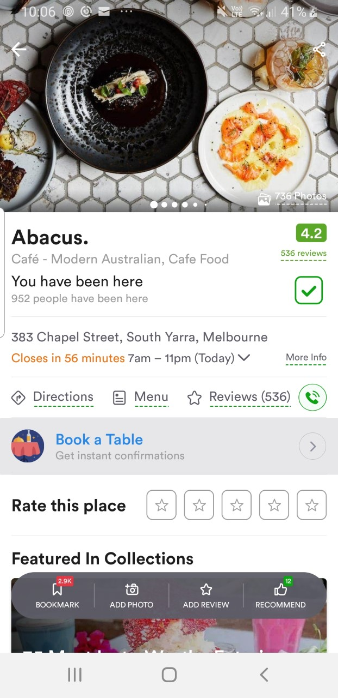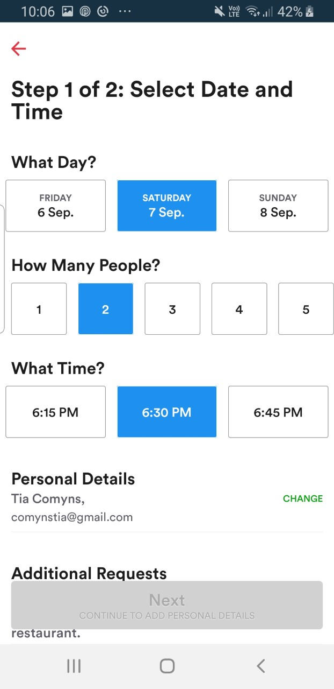
|
|
On top of this, Zomato also allows the user to sort restaurants by the
specific cuisine in which they are interested. Selecting one of the categories under the
cuisines page will take the user to a results page similar to the search function, but with the
ability to further narrow down their selection via a search bar. Zomato also offers an
‘events’ page, which displays special events and deals currently on offer at local
restaurants. All of these sections are all well designed and easy to navigate, however the sheer
magnitude of features on offer in the app means that the top scroll bar appears a little
cluttered, which could impact the ease of use and intuitiveness of the app, especially among
infrequent or inexperienced users.
|
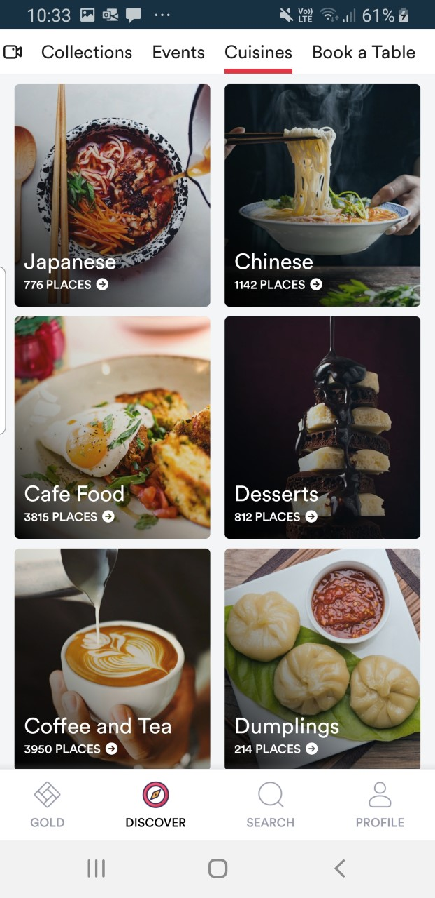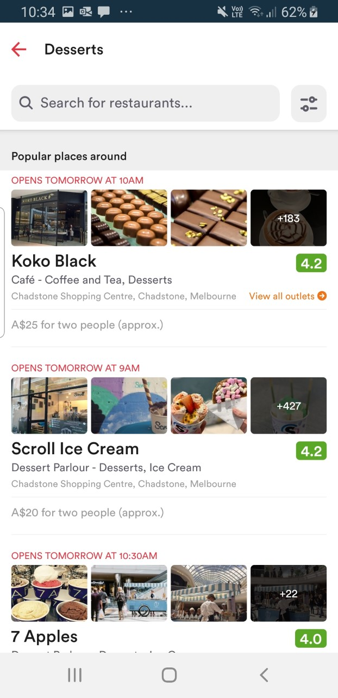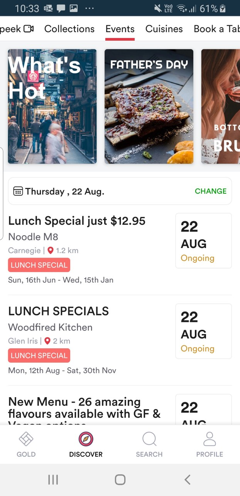
|
|
One strength of the Zomato platform is the depth of the information about
each restaurant. Users can submit images of the food on offer, as well as images of the menu
pages in order for potential customers to make decisions without having to actually visit. A
detailed list of features and facilities provided at each restaurant, as well as an average cost
per head, is also displayed for each restaurant on top of the traditional star review system.
The app is overall very well designed and easy to use.
|
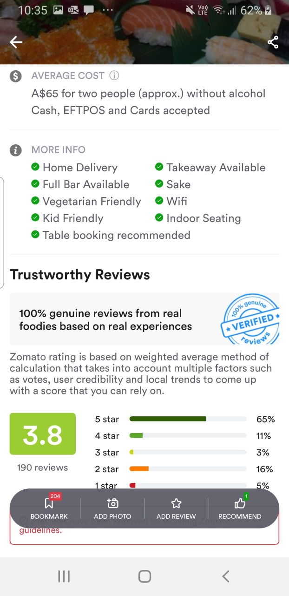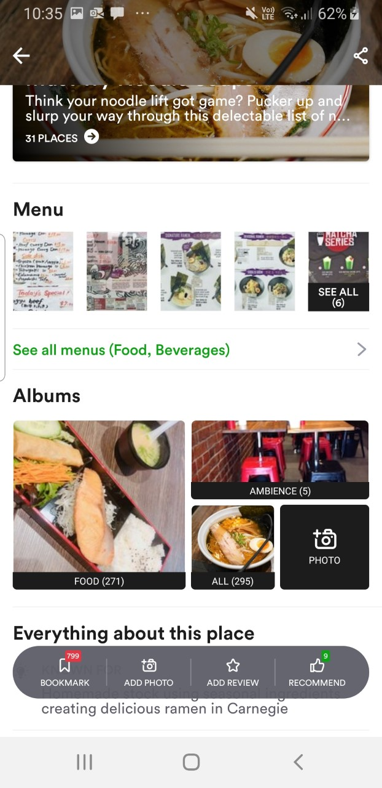
|
Zomato analysis based on Nielsen’s Heuristics
|
Usability
|
Efficiency and effect on users
|
Severity Rate
|
Nielsen Heuristic
|
Proposed solution
|
|
Although you could edit your reviews with ease after having posted them
the delete button for reviews on the app was hard to find and actually doesn’t work and
the review stays up.
|
This may bring frustration to users as they may no longer agree with an
old review or have accidently made it in the first place but it cannot be removed,
|
4
|
User control and freedom
|
Fix the remove button and also make it more accessible like the edit
review button.
|
|
There is no indication that the internet connection has been dropped
until you try and access another page; this goes for whilst writing reviews as well: it will
only tell you once you try and upload the review in which it will fail to do so
|
This may lead to users losing reviews because they had a connection when
starting it but try to upload it without one; the user should be told what is going on and
shouldn't have to click onto a new page to be told
|
3
|
Help users recognise, diagnose and recover from errors
|
Add a pop up window describing the situation and letting the user know
the internet connection has been dropped.
|
|
The app is always telling the user to sign up to the premium service that
the app provides and oftentimes leads to more work having to be done on the part of the user to
get where they want to.
|
This marketing method within the app may work but it leads to a worse
experience for the non premium user so much so that it might lead them to find an alternative
that works without that feature
|
2
|
Aesthetic and minimalist design
|
Simplify the posts about upgrading to premium so that they don't get
in the way or remove some of them to have a more fluid experience
|
|
The option to give feedback about the app, the privacy policy, terms of
service and the ability to log out are all somewhat hidden in a scrolling menu that, to some
users, is not obvious that it scrolls meaning that those functions might be difficult to
find.
|
To any user having a problem and wants to give feedback on the app or
wants to log out may not be able to because they find the options hard to finding leading to
frustration and confusing on whether these options even exist.
|
3
|
User control and freedom
|
Make the menu more obviously scrollable or move the related function to
easy place to find
|
|
Unfamiliar language used throughout the app may be confusing to new
users.
|
A lot of the language used on the home screen is related to the
'Zomato Gold' premium function and doesn’t really make any sense to a casual new
user such as the term 'Gold' for the home screen or '1+1 drinks' being a term
you can search by
|
1
|
Match between
system and real
world
|
Dial back on these terms and make the homepage more user friendly page
with language that can be understood by all users.
|
|
There is no help page giving new users tips on how the app works or
answering queries they might have about the app, the only way to get help is hidden within the
Zomato Gold page of the app which has FAQ’s for the Zomato Gold function and a chat
line.
|
Any user that needs help with the app will have a hard time finding the
chatline seeing as its hidden away at the bottom of the Zomato Gold page which has nothing to do
with help on the app. This can lead to users not knowing this function exists and may lead to
frustration as no help is provided for their issues.
|
3
|
Help and documenta-
tion
|
The chat line should be much more accessible as its current location is
not user friendly. It be within a help page that can be accessed from the menu.
|
|
Heuristic
|
Examples
|
|
User control and freedom
- User is able to leave reviews, edit them later
as well as change their own settings and account preferences
|
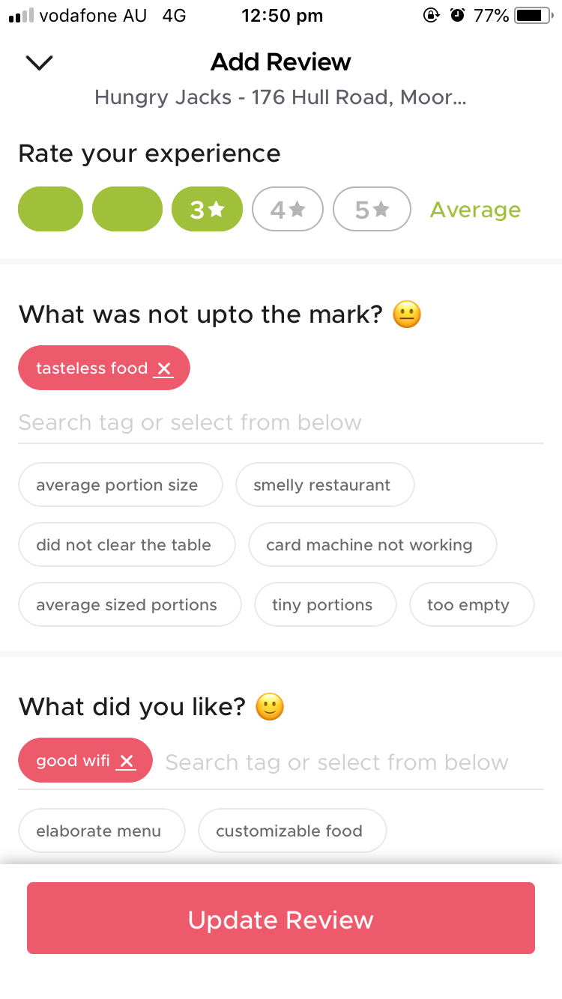
|
|
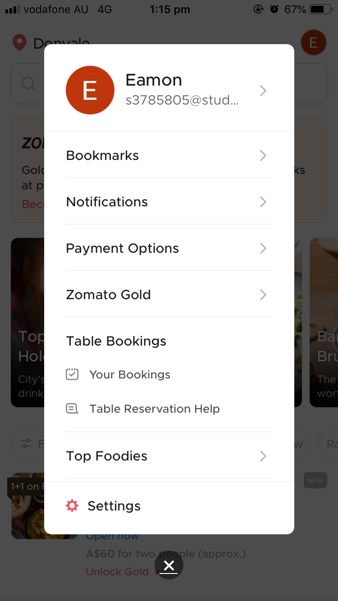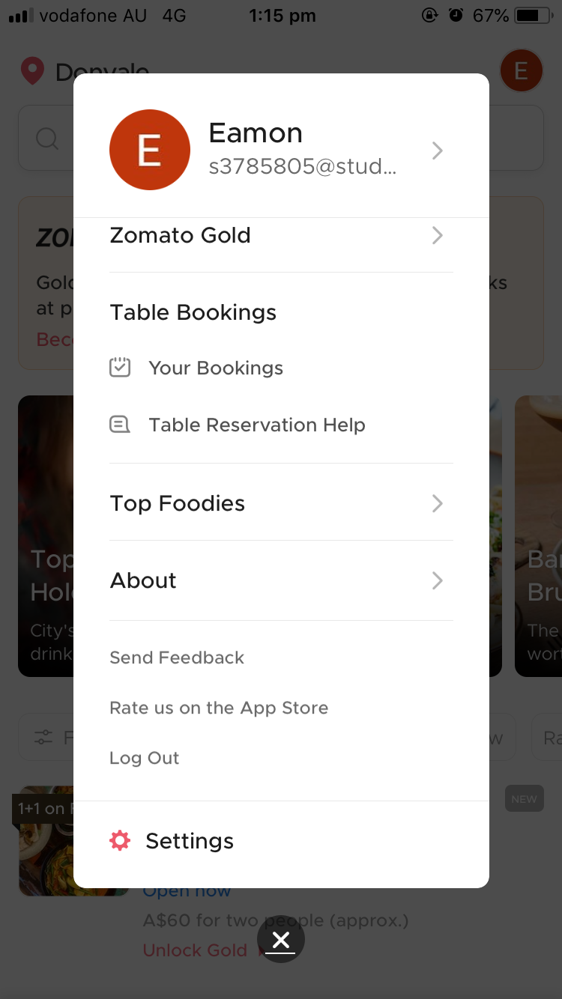
|
|
Help users recognise, diagnose and recover from errors
- Error messages are shown when reviews fail to
submit
|
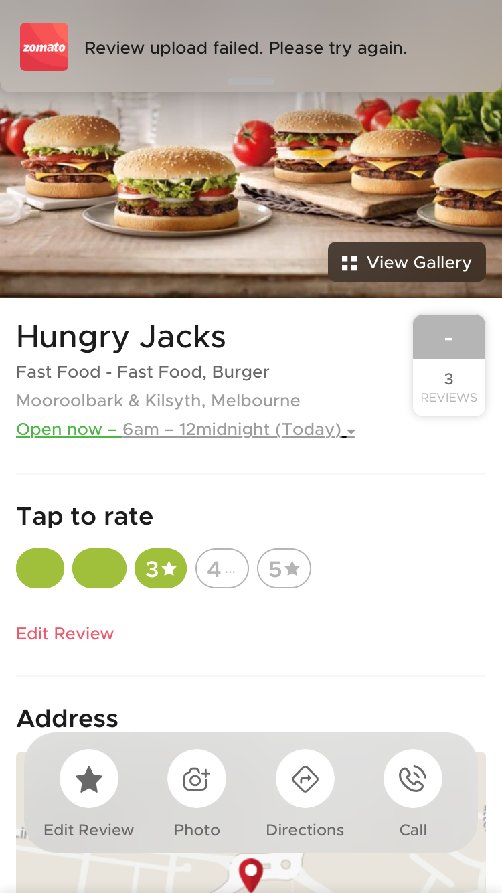
|
|
Aesthetic and minimalist design
|
 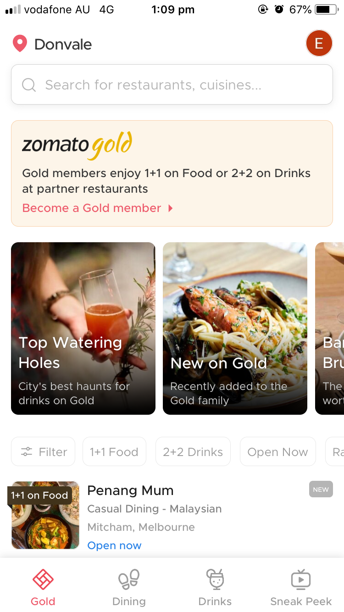 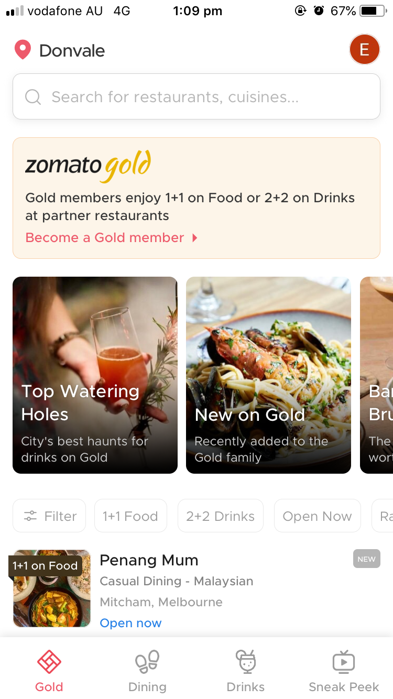
|
|
Match between system and real world
|
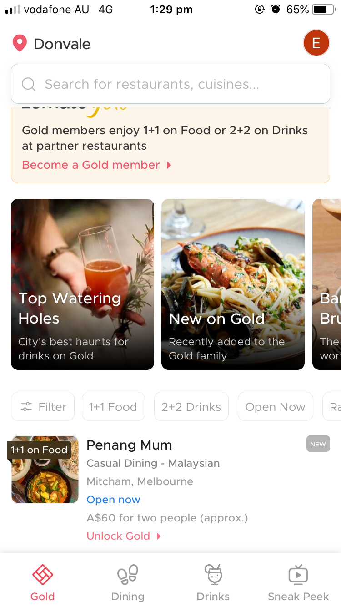
|
|
Help and documentation
- FAQ and live chat are available for user
queries
|
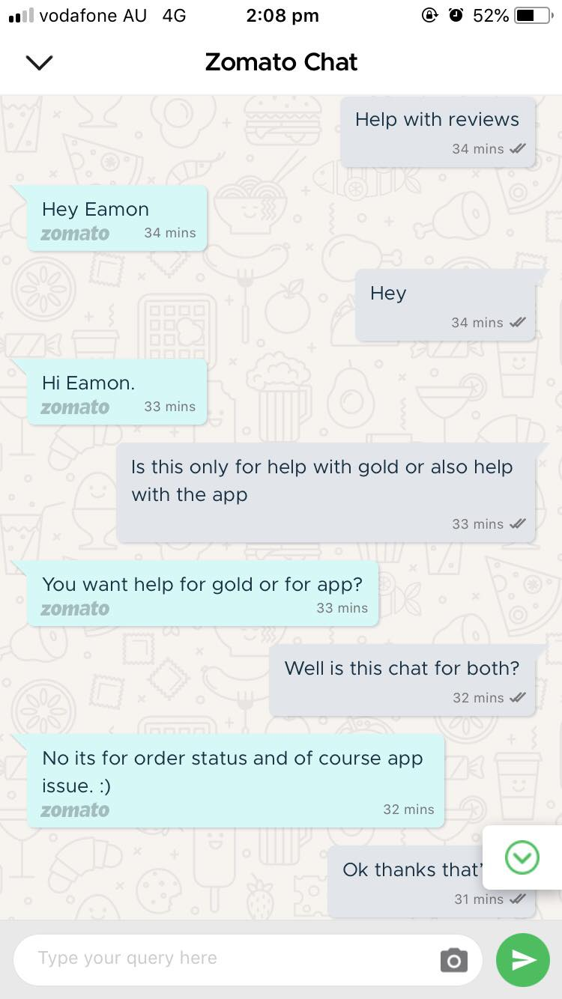
|
Part 2: Survey and design discussion
Pre-survey methodology
The survey questions were initially designed to establish the user groups by age,
whether they were a student, and the frequency at which they eat out. The responses to the initial questions
would provide a clearer understanding of the demographics of users, how many intersecting attributes they
shared, and perhaps even a deeper understanding of the type of people that would eat on-campus. The next
section revolves around the topic of food apps. Specifically, the respondents are questioned as to whether
they have used Yelp and Zomato, two of our biggest competitors. If so, the questions address specific
features of said apps they used (i.e food reviews) and those they did not (i.e in-app directions), followed
by their use frequency, and their motivation for downloading them. Finally, a section dedicated to certain
healthy eating habits often assisted by apps, such as whether the respondents logged meals, was added. This
would help us identify whether our target audience values the core features proposed for our app.
Survey methodology
The survey was constructed in Google Forms and sent to various social groups via
Facebook Messenger and Discord over a period of a week. A total of 16 responses were received. The
Participant Information Form was included at the start of the survey in order to inform the participants
about the scope and methodology of the survey.
Observation methodology
As we are also part of one of the target user groups, that being students at
RMIT, most of our observations were done within day to day social interactions within our social groups. We
simply observed the interactions, both interpersonal and with their smartphones, made by members of our
social groups when they were planning a meal out, taking special note of what applications they used and the
ways in which they used them.
Survey results
All of our respondents happened to be between 18-25 years old, and 87% of
respondents were RMIT students, with the others being other university students or locals, which can be
expected as this was by far the most important target demographic of our application. However, this also led
to biased results as it meant we did not get any responses from some of the other potential demographics we
identified, such as staff. This suggests that either our user groups could have been better distinguished,
that our survey methodology focused too much on this particular user group, or that these other demographics
are simply not as likely to be interested in using this sort of app and hence also disinterested in
completing a survey about one.
|
Users
|
RMIT Students
|
Other Universities’ Students
|
Locals
|
|
Attributes
|
- 87% of our survey participants were RMIT
students
- 18-25 years old
- 40% eat out almost every single day and 53.3% eat out
1-2 times a week with only 1 responder to our survey eating out 1-2 times a month.
- 66.7% eat out at lunch and 20% eat out at
dinner
- Responders were much more likely to eat out if they
were on campus
- 53.3% of responders rated themselves of average
health and fitness levels
- Nearly 50% of responders said that health did not
play a part in their food choices
- 93% said that convenience is the biggest factor for
dining out
- The three biggest influences on where people dine out
are Location, Taste and Cost
- 75% of responders said the biggest reason for them
using a food app is to browse the available options
- Were not likely to be ongoing users of a competing
app (Yelp or Zomato)
|
|
Within this dominant user
group, the survey results showed that there were slightly more male than female respondents at 56.3% male.
This shows that the use of food apps as well as the issue of healthy eating is relevant to both genders
within this demographic. In addition, respondents tended to eat out more often than not, with ‘1-2
days a week’ and ‘almost every day’ making up over 90% of the results. The frequency of
eating out could also be linked to being on campus, as over 90% of respondents answered that they were
significantly more likely (rating themselves 4 or 5 out of 5, with 5 being very likely) to eat out if they
were on campus. Health-related factors were not very important in the respondents’ food choices, with
only 26.7% of respondents responding that they were always played a part in their food decisions.
The most important reasons our respondents stated for why they eat out were for
the convenience and for social reasons (see Appendix - Survey - eating habits). Only one respondent cited
health reasons, lending weight to the argument that outside food is perceived as unhealthy. As predicted,
convenience and cost were the biggest deciding factors in where our respondents chose to eat out. This data
suggests that aside from incorporating features to assist in healthy eating, our app should incorporate some
indication of the cost of a restaurant, as well as its convenience (the latter most likely in the form of a
map). The results also showed that the main reasons people would use a dining app would be to discover new
places to eat and to browse the available options (see Appendix - Survey - food app habits), with health
reasons placing last, meaning our app’s health features must be well integrated with the features
expected of a dining app.
When it came to awareness and use of competing apps, only three out of sixteen
respondents had used Yelp in their lifetime; Zomato was better represented with eight respondents (see
Appendix - Survey - Zomato usage and Appendix - Survey - Yelp usage). Between both of these apps,
respondents noted that by far the main reason they downloaded the app was to find new places to eat, and the
feature they liked most was the ability to quickly find and read reviews. Despite this, they never used the
app in isolation, always using it in conjunction with another method of finding food. The majority of users
also did not rely on the in-app navigation features, preferring to use their smartphone’s built-in
maps app or a combination of both. Finally, users tended to uninstall the app within a matter of days after
installing it, often citing that it was unneeded when other options existed, or in the case of Zomato, their
preference to use the web version.
Our observations and interview responses also showed this demographic’s
reluctance to use a dedicated food app. The exclusive use of Google or Google Maps, without any other food
app (even the web version Zomato) was seen in all of our observations, and Google was also referred to by
name by all four of our interview candidates when asked how they usually found food.
These responses point to the market for standalone food apps for our particular target
demographic being a very challenging one into which to break, let alone having a healthy eating component
which was noted by most respondents as not a priority. This is likely due to the effects of being brought up
in an age of developing technology which necessitates a high level of technological literacy, bringing with
it an increased proficiency in finding information on the Internet without the need of the extra download of
a dedicated app. In addition, tech giants such as Google who offer an all-encompassing, integrated service
also take away incentive for consumers to use more specialised competing products when it is much more
convenient to stay within the integrated service, as evidenced by the survey responses.
Design Directions
Despite the challenges outlined above, our design direction remains to deliver an
app that is essentially a hybrid of a food finder app (ala Zomato) and a diet assistant app, integrating the
features of the two, as the survey, interview and observation responses clearly shows that our target
audience favours integrated experiences. In addition, since the survey revealed that health is low on the
priority list compared to convenience and cost when eating out, an integrated implementation of these
features could help sway decisions in favour of healthier ones since the health information would be made
easily accessible alongside the other information.
Although users preferred to use external navigation apps, a campus map feature
would still be crucial in our app to highlight the location and thus convenience of each food option. As a
university campus is not very large geographically, this could even be the main screen of our app, displayed
upon loading, to help the user quickly situate themselves in relation to the available food options. In
addition, a review and rating system, as well as user-submitted tags and photos, would be implemented as
most respondents stated that they downloaded food apps mainly for reviews.
Where our app would differ from most food apps is the inclusion of health-related
features, firstly being a ‘health rating’ for each restaurant displayed alongside the main
rating with equal prominence. This would be calculated via a combination of user-submitted scores as well as
our own research into each restaurants’ menu, and would inform the user at a glance as to whether the
option was on the healthier side or not, without having to go to an external source of information. In
addition, we would include other health-related features typically found in diet apps, including a calorie
counter, with the calorie count of the menu items from restaurants on campus pre-calculated in order to be
able to be quickly added to the daily log alongside custom entries. We would also allow the user to track
other metrics such as their remaining calorie intake per day, as well as their water intake, and include
features such as the location of all water fountains on campus on the map to assist. All of these
features would be represented visually via graphs or other images, as the survey results universally showed
that respondents would be more receptive to making changes in their diet if they could have visual feedback
as to what they were eating (see Appendix - Survey - diet tracking and diet app feature requirements).
Visually, the application would have to meet minimalistic design standards, not
only because it is modern practice but also because some interview candidates responded that the interface
of Zomato was a bit too cluttered for their taste, showing that they value clean, distilled interfaces. We
would use an existing design framework such as Google’s Material Design in order to make sure our
application’s feel remains consistent with what users have been trained to expect. Our main accent
colour would be green, as it connotes health and freshness. Restaurant ratings and health ratings would be
displayed prominently as the user clicks on them on the map as well as on each restaurant’s own page.
We believe that integrating the health- and diet- related information and
features seamlessly alongside more traditional features of dining apps such as reviews and star ratings
would encourage users to make healthier choices when eating on campus. This is due to the fact that our user
research overwhelmingly showed that the reason that most people didn’t use standalone apps for food
was due to a lack of integration and convenience to access certain information. If health information were
made as accessible as more traditional information about restaurants, users of our app would have no choice
but to notice, even if it will be hard to sway users away from a near-monopoly on information such as Google
in the first place.
Works Cited
Clampet, J. (2019). Restaurant Megatrends 2019: Google's Domination of Local
Discovery Is Almost Complete. [online] Skift Table. Available at:
https://table.skift.com/2019/01/29/restaurant-megatrends-2019-googles-domination-of-local-discovery-is-almost-complete/
[Accessed 6 Sep. 2019].
McLaren, L. (2007). Socioeconomic status and obesity. Epidemiologic reviews,
29(1), 29-48.
National Restaurant Association. (2017). Healthy foods drive dining choices. [online]
National Restaurant Association. Available at: https://restaurant.org/Articles/News/Batch2_201901/State-of-the-Industry-Healthy-foods-drive-dining-c [Accessed 6 Sep. 2019].
Schumer, H., Amadi, C., & Joshi, A. (2018). Evaluating the dietary and nutritional apps
in the Google Play Store. Healthcare informatics research, 24(1), 38-45.
Appendix
Survey
Survey link:
https://docs.google.com/forms/d/1IjrG3cwCy-WTcjtvOz-rNPEjE0b31dni61_8gH75Bog/edit?usp=sharing
Survey results - demographics
|
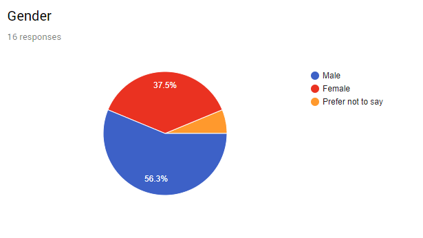
|
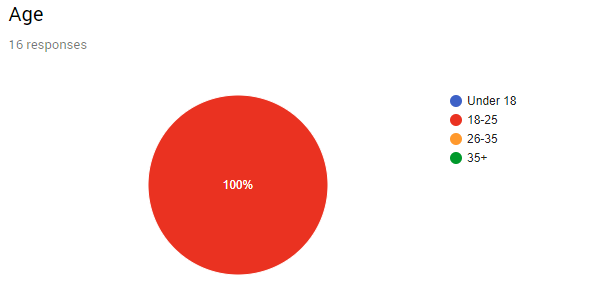
|
|

|
|
Survey results - eating habits
|
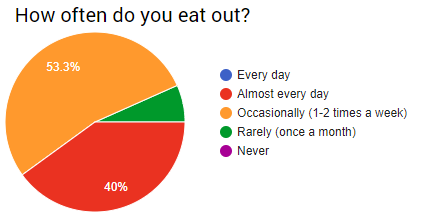
|

|
|
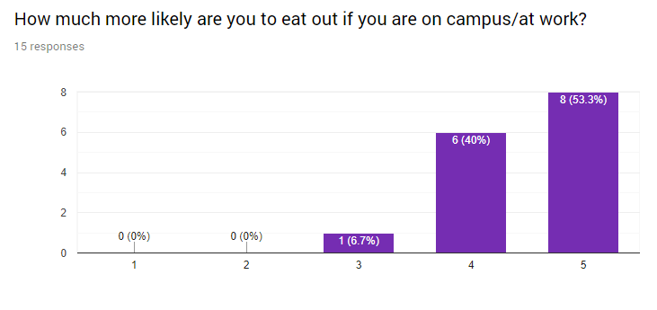
|
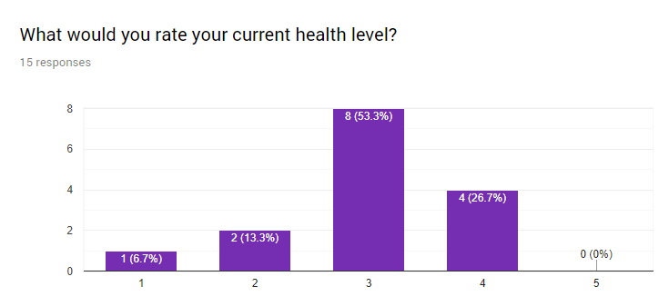
|
|
|
|
Survey results - food app habits
Survey results - Zomato usage
|
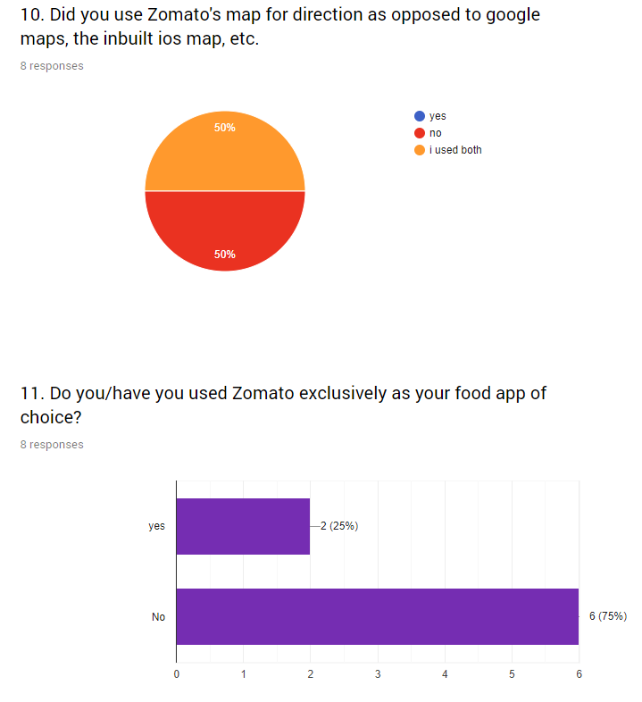
|

|
|
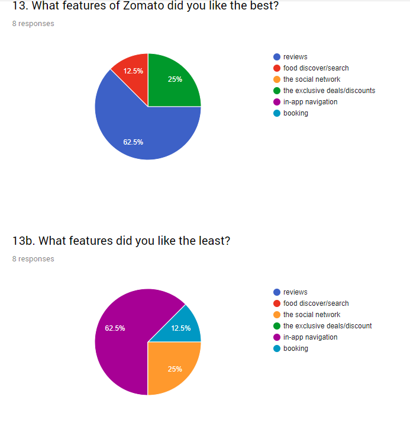
|
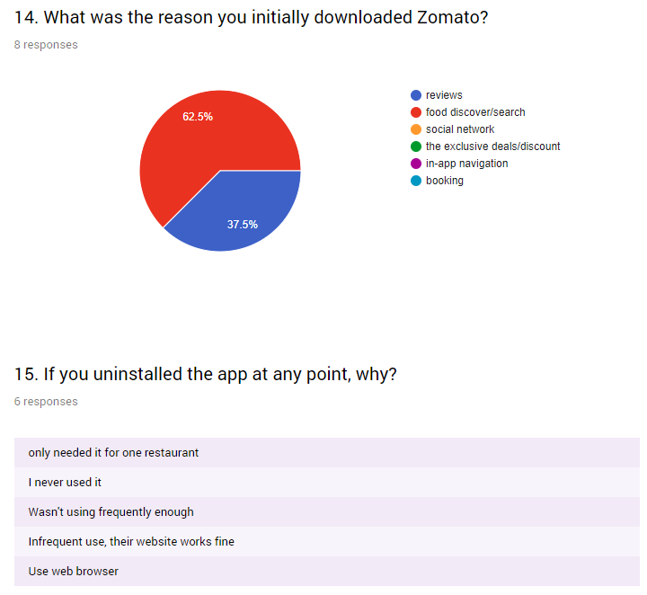
|
|
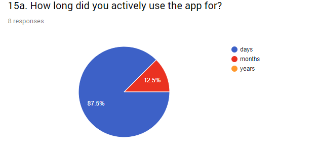
|
|
Survey results - Yelp usage
Survey results - diet tracking and diet app feature
requirements
Observations
Observation 1
5 pm - 6 pm, 31/8/2019, city
- 2 students, aged 21 and has just finished class
-Observed individual/s basis of choice be based on a combination of perspective
style of dish (japanese) and review score.
-initial course of action was searching for different types of
foods through google, and cycling the first 3 results available
-restaurants rated below 4 stars weren’t considered and ignored
-When looking at restaurants, the menu’s weren’t opened and only the
reviews were looked at in detail.
-distance didn’t factor into where to eat as long as it was in
the general CBD area
-Navigation was handled by google maps, address was automatically directed via
google review’s indication of address
-one of the students logs what he eats through a calorie intake
application.
-The other does not care but is conscious of how much/what he eats.
-Healthiness of the dish did not come into play until after arriving at the
restaurant and seeing the menu.
Observation 2
7~8pm, 05/09/2019, city
- 4 23~24-year olds (some students and some just entered the
workforce) meeting up for dinner at major station
- Had already decided on a restaurant, but upon checking Google
Maps to check the transit directions, discovered that it closed too soon to be able to realistically
make it in time
- Had to decide what to eat - searched 'food' on google
maps
- Saw an Indian restaurant within a moderate (walkable) distance -
one person who was (loosely, not logging it or anything) watching what they were eating decided Indian
was too fatty and that they needed a healthier option
- Asked them what they wanted and thought of cuisines that they
thought were healthy, settling on charcoal chicken
- Everyone else didn’t want charcoal chicken when they came
out to the CBD specifically to have a 'fancier' meal
- Person who was watching healthy eating ended up forgoing the diet
and group decided on an Italian restaurant they frequented
- Used Google Maps to determine the fastest route and followed its
directions to the restaurant
- Upon arrival and seating, decided what to get based on their whim
(and not health)
Interviews
Interview questions
- Are you a university student?
- How many times a week do you eat out?
- What are the main reasons you usually eat out?
- Is eating healthy a concern when you eat out?
- Do you usually use an app to find places to eat out at? If so,
which one?
- Are you aware of Zomato; have you used it? (How did you find it
if you are aware or already use it?)
- Let them use Zomato
- What feature of Zomato do you find most useful?
- What features of Zomato do you think could be improved?
Interview Candidate 1:
Hugo, 21
Monash Design student
Are you a university student?
I was, I graduated in 2018, currently working in design.
How many times a week do you eat out?
'Every day at work for lunch, sometimes I will even eat out for dinner as
well, so it could be 1 to 3 times a day considering the circumstances.'
What are the main reasons you usually eat out?
'Combination of being too lazy to cook for myself, convenience and
pleasure'
Is eating healthy a concern when you eat out?
'Yes, but I do log what I eat, so if it fits within my diet and intake it
doesn’t matter, although there are times where I will eat a six pack of donuts.'
Do you usually use an app to find places to eat out at? If
so, which one?
I use to, sparingly, but i do not use them anymore, i prefer just googling a food
type and going off google's first results.
Are you aware of Zomato; have you used it? (How did you
find it if you are aware or already use it?)
Let them use Zomato
What feature of Zomato do you find most useful?
The reviews and search bar is what i interacted with the most, but I could use
the app exclusively for the discounts that are available.
What features of Zomato do you think could be
improved?
I didn’t even realise you could use the map for navigation, there’s
no reason to use it over something like google maps or the inbuilt map.
Interview Candidate 2:
Matt, 19
RMIT IT Student
Are you a university student?
Yes, I currently attend RMIT
How many times a week do you eat out?
1-2 on average, changes depending on the week
What are the main reasons you usually eat out?
Mostly convenience whilst in social situations and the fact I can’t
cook
Is eating healthy a concern when you eat out?
No not usually, really just comes down to cost and taste really
Do you usually use an app to find places to eat out at? If
so, which one?
No not really, just look up places near me on google or just walk around until I
find somewhere that looks good.
Are you aware of Zomato; have you used it? (How did you
find it if you are aware or already use it?)
No never really used, just seen zomato based reviews show up on google
searches.
Let them use Zomato
What feature of Zomato do you find most useful?
Probably just the reviews of restaurants near me or the ability to locate places
to eat nearby as well.
What features of Zomato do you think could be
improved?
It just seems a little pointless to me, ive gotten by thus far, not sure why I
would need another app for something i can just google search already.
Interview Candidate 3:
Stuart, 22
Melbourne Uni, Engineering Student
Are you a university student?
Yes, I am studying a Masters of Mechanical Engineering at Melbourne
How many times a week do you eat out?
Probably 3 times a week
What are the main reasons you usually eat out?
I like the taste of the food I can get at nearby restaurants, it’s also
convenient.
Is eating healthy a concern when you eat out?
Not really, If i’m eating out im eating whatever I want to eat.
Do you usually use an app to find places to eat out at? If
so, which one?
Sometimes I use uber-eats because I like to see the menu but I usually use google
maps to find food.
Are you aware of Zomato; have you used it? (How did you
find it if you are aware or already use it?)
I am aware of Zomato and I have used it in the past, I think I probably googled
restaurant review and used the browser based version to check out the menu and reviews and stuff.
Let them use Zomato
What feature of Zomato do you find most useful?
I like that when you’re scrolling through the options each of the restaurants
has a snapshot of what the food looks like and a star review so its very easy to
tell what sort of place I want to go for quickly.
What features of Zomato do you think could be improved?
I think that the UI is a bit cluttered, there’s a bit too much on the
screen at once, I think it could be much more intuitive and obvious. Its kinda tricky and I think they could
streamline it and make everything a lot less busy and it would make the app much easier to use.
Interview Candidate 4:
Rob, 24
Deakin film student
Are you a university student?
- Attends Deakin Burwood campus
- Also works in retail in a shopping centre
How many times a week do you eat out?
- Varies depending on whether I’m seeing friends, but on
average about 1-3
What are the main reasons you usually eat out?
Is eating healthy a concern when you eat out?
- Not really, I live with my family so I usually have healthy food
at home, so when I eat out I don’t need to watch what I eat
Do you usually use an app to find places to eat out at? If
so, which one?
Are you aware of Zomato; have you used it? (How did you
find it if you are aware or already use it?)
- Yes, I’m aware of it. Sometimes I click on the zomato
result on google to see the menu and reviews but not often. I don’t use the app
Let them use Zomato - observation
- Annoying that it spams ads for the premium service upon
installation - super invasive and not obvious where to actually use the function of the program (big
green 'Become a member now' button draws attention compared to greyed out function icons at the
bottom)
- Clicking discover:
- A lot, almost too many options
- Names and descriptions cut off
- Not clear how the 'for you' options are selected
- Clicks on sneak peek on top of discover
- Brings up a random page - Is this like random page on
wikipedia?
- Clicks back - taken to a feed of reviews
- Not really interested in this content (dont consider myself a
foodie, would prefer to find somewhere quickly
- Skips past collection and event tabs
- Likes cuisines tab - clicked on cuisine tab
- Results from this are useful - shows places that are close to you
and popular in a good layout (nothing cut off) with preview images, closing times etc, then
scrolling past expands the area
- Probably the tab I would use the most
- Went back and went to book a table
- Why is this tab available when the next button is greyed out
(because havent selected a restaurant)?
- It shows personalised results (trends) before i’ve even
typed anything
- Would be useful if i wasn’t expecting to search for
something and see only those results
- Clicks on search and more recommended places appear before
typing
- Searches for butter chicken - useful that you can search for dish
as well as cuisine and restaurant name
- Search results displayed in same format as cuisines tab results -
good
- Selects a random restaurant from search results
- Like how it displays detailed information, but maybe too much
information for me because
- Good that it has the menu (people taking pictures of it and
posting it), because some places when googling them don’t have a menu
- Would probably not follow these recommendations because usually i
just get what i feel like
- Did not log in so tab was useless
What feature of Zomato do you find most useful?
- The cuisine tab was the most useful, usually when I want food
there is a certain type of food I am craving so it is useful to be able to search by that. The results
of the cuisine tab, which is displayed in the same format as the search results, is also laid out well
and informative at a glance
What features of Zomato do you think could be
improved?
- Definitely the Zomato Gold ads upon installing and loading the app, it was
hard to see where I could actually start using the app and it was super invasive (even though
that’s business)